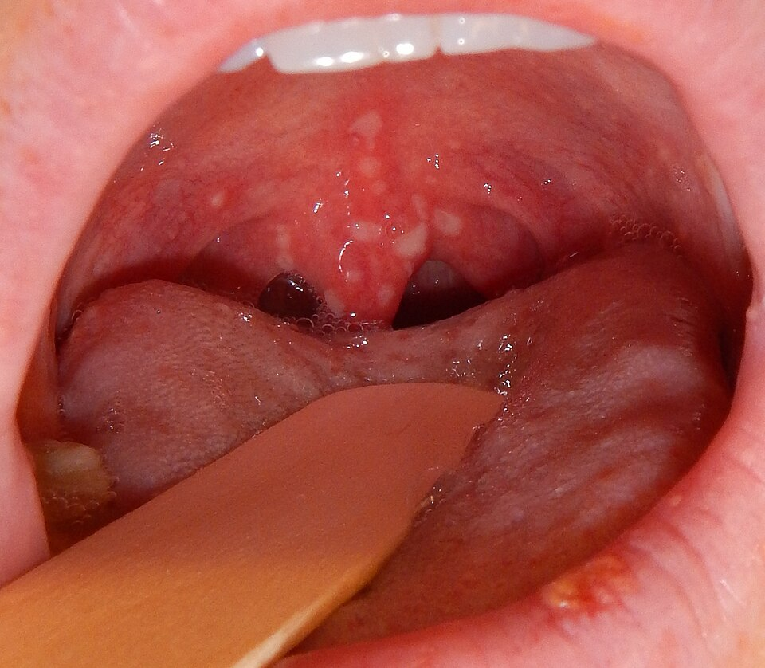
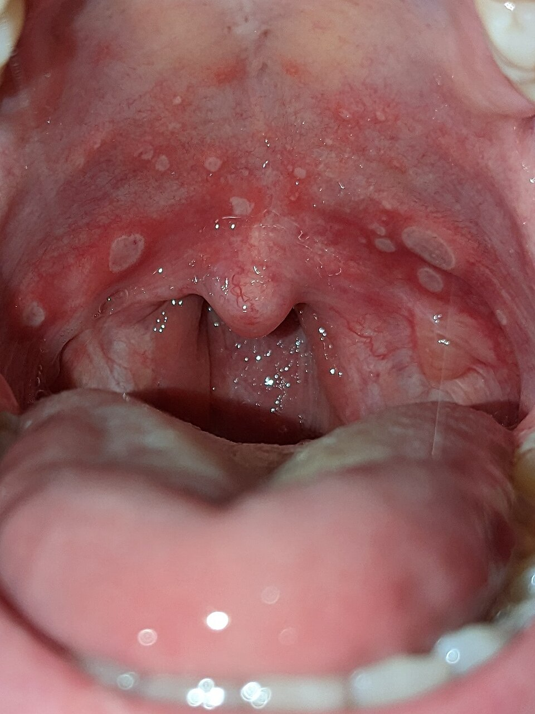
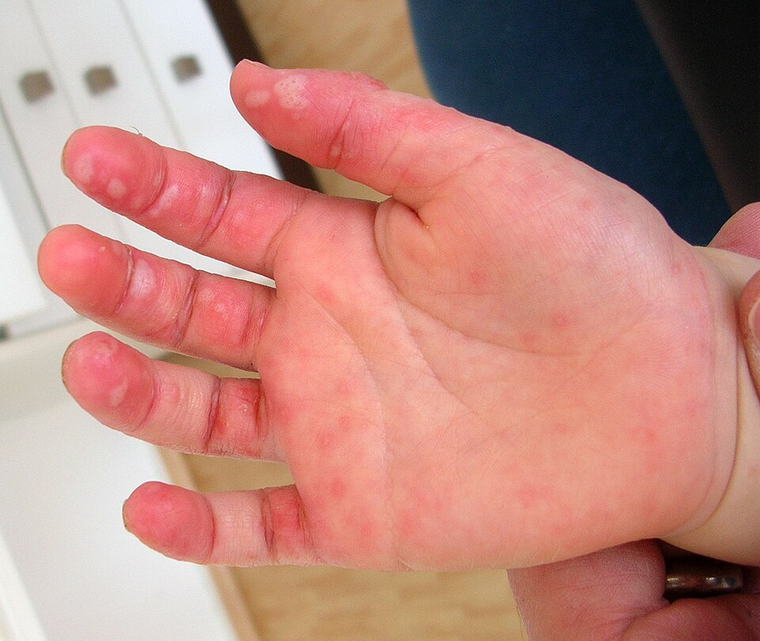
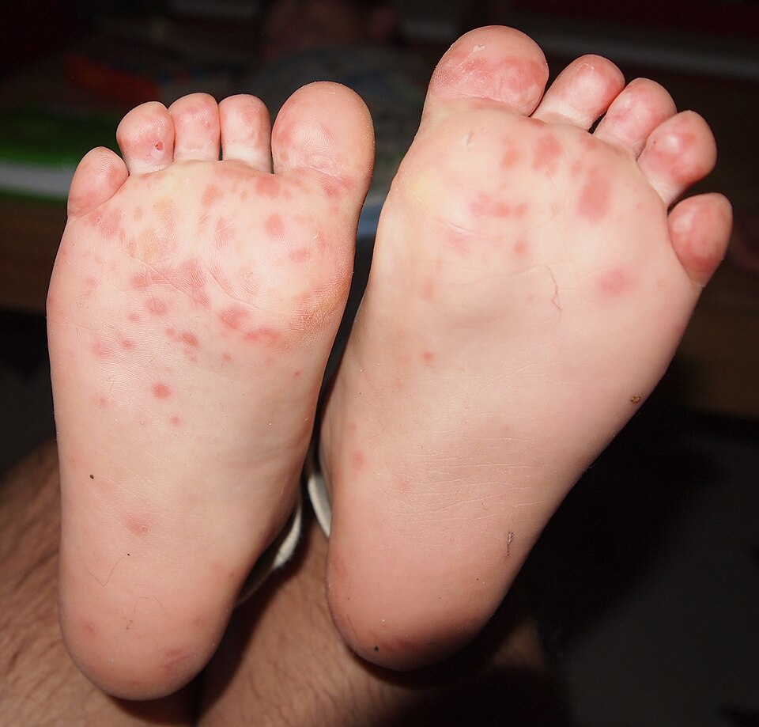
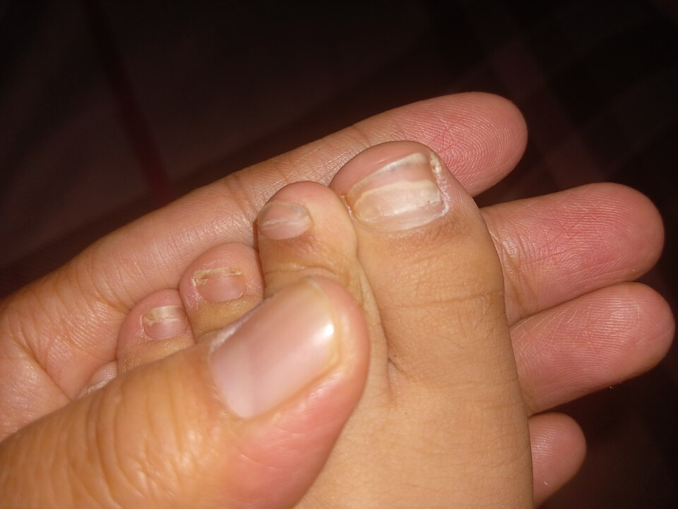

腸病毒（手足口病、疱疹性咽峽炎）
發燒、嘴巴破、手腳長小水泡——這是台灣孩子每年春夏最常見的腸病毒感染。大多數 7–10 天會自己好，但家長要學會辨認少數孩子可能出現的重症前兆。
1腸病毒是什麼？
腸病毒不是單一種病毒，而是一大家族，包括克沙奇病毒、伊科病毒、腸病毒 71 型、D68 型等。得過一種，之後還是可能被其他型感染。
2兩種常見表現
👄 疱疹性咽峽炎
- 位置
- 只有口腔後方（軟顎、懸雍垂、扁桃腺附近）
- 樣子
- 小水泡破掉後變成灰白色、周圍紅紅的潰瘍
- 症狀
- 突然高燒、喉嚨痛、流口水、不肯吃東西
✋ 手足口病
- 位置
- 口腔（舌頭、牙齦、臉頰內側）＋手掌、腳底，也可能在膝蓋、屁股
- 樣子
- 紅疹或米粒大小的小水泡，通常不太癢
- 症狀
- 發燒（可能不高）、嘴巴痛、食慾差
3照片：口腔潰瘍與手腳紅疹
點照片可以放大。





4病程時間軸
5重症前兆：出現任何一項，立刻到大醫院
- 嗜睡、意識不清、活力不佳：一直想睡、叫不太醒、眼神呆滯、不想玩
- 肌躍型抽搐：沒有原因突然像受到驚嚇一樣全身一抖，睡覺時特別明顯（看下方影片）
- 持續嘔吐：不是吃東西嗆到，而是一直吐
- 呼吸急促、心跳加快：沒有發燒時呼吸、心跳仍然很快，或臉色蒼白、冒冷汗
- 手腳無力、走路不穩：手腳突然軟軟的抬不起來、走路搖晃
這些前兆通常在發病後 7 天內出現，病情可能在幾個小時內惡化。家長不要等到下次門診，直接到有兒科加護病房的大醫院。有疑問可撥打疾管署防疫專線 1922。
6肌躍型抽搐長什麼樣子？
這是一位 5 歲、腸病毒 71 型引起腦幹發炎的男孩，在睡眠中錄下的影片。注意看他的右手前臂突然彎曲抽動，以及全身突然一抖——就像被嚇到一樣。偶爾一次可能是正常的睡眠抽動，但如果一小時內好幾次、或白天清醒時也出現，就要馬上就醫。
建議：如果覺得孩子抽動怪怪的，用手機錄下來給醫師看，對判斷很有幫助。
7在家怎麼照顧？
- 止痛最重要：嘴巴破很痛，孩子常因此不吃不喝。可以使用醫師開立的退燒止痛藥（acetaminophen 或 ibuprofen），在吃東西前 30 分鐘給藥效果更好。
- 吃冰涼、軟質的食物：冰牛奶、布丁、豆花、冰涼的稀飯或麵線；避免太燙、太酸、太鹹、太辣的食物和果汁。
- 注意喝水和尿量：少量多次補充水分。如果 8 小時以上沒有尿尿、嘴唇很乾、哭沒有眼淚，要回診。
- 不需要抗生素：腸病毒是病毒感染，目前沒有特效藥，大多數會自己好。
- 水泡不要弄破：手腳的水泡會自己乾掉，不需要擦藥；保持乾淨即可。
- 在家休息至少 7 天：發病後一週內傳染力最強，請不要上學、上幼兒園或去公共場所。
- 每天觀察重症前兆：特別是發病後的第一週，睡覺時也要留意有沒有肌躍型抽搐。
8預防與消毒
洗手：用肥皂濕洗手
- 酒精對腸病毒效果不好，一定要用肥皂和清水洗手。
- 回家、吃飯前、上廁所後、換尿布後、擤鼻涕後都要洗。
- 大人下班回家先洗手、換衣服，再抱家裡的嬰兒。
- 生病的孩子盡量和家中嬰兒分開，不共用餐具、毛巾。
市售家用漂白水（含氯 5–6%）100 mL 加入 10 公升清水
擦拭玩具、門把、桌面、床欄；放置 10 分鐘後再用清水擦乾淨
當天泡、當天用；戴手套、保持通風；不要和其他清潔劑混用
- 疫苗：國內有自費的腸病毒 71 型疫苗，適用 2 個月以上、未滿 6 歲的孩子，需打 2 劑。它可以預防 71 型引起的疾病與重症，但不能預防其他型的腸病毒，打過疫苗仍要勤洗手。
- 症狀好了以後糞便仍會排出病毒數週，換尿布、上廁所後洗手要持續做到。
近五年實證重點（2026/11 整理）
- EV-A71 疫苗效力：2022 年台灣、越南多國第三期試驗（2–71 個月）顯示不活化 EV71 疫苗對 EV71 相關疾病效力 96.8% [2]。2025 統合分析：RCT 兩劑效力 95.6%，真實世界兩劑保護效果 84.3%；對 CVA16、CVA6、CVA10 沒有交叉保護 [3]。
- 重症病原分布：中國 2008–2012 年資料中 EV-A71 占重症 45%、死亡 90%；疱疹性咽峽炎約 2.6–4.3% 出現神經症狀，1 歲以下嬰兒重症比例最高 [1]。
- 非典型手足口病：CVA6、CVA4、CVA10 可造成範圍較廣的皮疹（軀幹、臉、四肢），以及事後的脫甲 [1]。
- 神經表現：2025 年病例系列以多頻道肌電圖記錄 EV-A71 菱腦炎的肌躍型抽搐，清醒與睡眠時皆可出現 [4]。
- 治療：目前沒有核准的特效抗病毒藥；IVIG 用於新生兒與重症病人，但缺乏大型 RCT [1]。
型別與臨床表現
| 型別 | 主要表現 |
|---|---|
| EV-A71 | 手足口病、疱疹性咽峽炎；腦幹腦炎、自主神經失調、神經性肺水腫／肺出血，重症與死亡的主要型別 [1]。 |
| CVA16 | 典型手足口病，多半輕症。 |
| CVA6 | 非典型、範圍廣的水泡疹（可在腔口周圍、異位性皮膚炎處），常見事後脫甲 [1]。 |
| CVA4、CVA10、CVA2 | 疱疹性咽峽炎；CVA4 可造成較深、癒合較久（可達 14 天）的潰瘍 [1]，台灣亦有 CVA4 重症死亡案例。 |
| CVB、Echovirus 11 | 新生兒敗血症樣表現、心肌炎、猛爆性肝炎合併 DIC [1]。 |
| EV-D68 | 呼吸道症狀、氣喘樣發作；急性無力脊髓炎（AFM），上肢無力較常見，MRI 灰質發炎 [1]。 |
診斷與通報
- 手足口病與疱疹性咽峽炎為臨床診斷，不需常規檢驗。
- 疑似重症或新生兒感染時，採咽喉拭子、肛門拭子／糞便、腦脊髓液做 PCR 或病毒培養以確認型別。
- 需要和以下疾病區分：單純疱疹齒齦口炎（口腔前方、牙齦紅腫）、水痘、川崎病、麻疹、藥物疹。
- 通報：「腸病毒感染併發重症」為第三類法定傳染病，依疾管署規定於 1 週內通報並採檢。
重症分期與處置
| 分期 | 表現 | 處置重點 |
|---|---|---|
| 第 1 期 手足口病／疱疹性咽峽炎 | 發燒、口腔潰瘍、手腳疹 | 症狀治療、補充水分；衛教重症前兆，發病 7 天內每日觀察 [5]。 |
| 第 2 期 中樞神經侵犯 | 肌躍型抽搐、嗜睡、持續嘔吐、震顫、步態不穩、腦膜炎、腦炎、急性無力肢體麻痺 | 住院監測生命徵象（心跳、血壓、呼吸、血糖）；避免過度輸液；頻繁肌躍或腦炎可考慮 IVIG [5]。 |
| 第 3 期 自主神經失調 → 心肺衰竭 | 持續心搏過速、高血壓、冒冷汗、皮膚花斑、呼吸急促、高血糖；進展為肺水腫／肺出血、低血壓、休克 | 加護病房；IVIG；milrinone 改善心功能與降低後負荷；及早插管並使用 PEEP；避免單用 dopamine、epinephrine 等升壓劑；難治者考慮 ECMO [5,6]。 |
| 第 4 期 恢復期 | 可能遺留神經學後遺症（吞嚥困難、肢體無力、認知發展遲緩） | 復健、長期神經發展追蹤；重症存活者約 1.1–3.7% 有神經後遺症 [1]。 |
分期架構依 WHO 西太平洋區署手足口病臨床處置指引 [5]（以台灣 1998 年後的經驗為基礎），milrinone 證據來自台灣與越南的研究及 RCT [6]。IVIG、milrinone 的劑量與使用時機請依疾管署與院內最新流程，表中不列固定劑量。
新生兒腸病毒
- 多數無症狀或只有發燒；少數出現腦膜腦炎、心肌炎、肝炎合併急性肝衰竭或敗血症樣表現，一旦發生 DIC 死亡率極高 [1]。
- 注意產前或產後母親發燒、腹瀉的病史，以及家中其他孩子的腸病毒感染。
- 新生兒疑似腸病毒感染時應住院評估肝功能、凝血功能、心臟功能；IVIG 常用於重症新生兒，但缺乏大型 RCT [1]。
EV-A71 疫苗
- 台灣自 2023 年起有國產不活化 EV71 疫苗可自費接種，適用 2 個月以上至未滿 6 歲，2 劑間隔 28 天（依各廠牌仿單）。
- 第三期試驗（台灣、越南，2–71 個月，2959 名兒童）：對 EV71 相關疾病效力 96.8%（95% CI 85.5–100）[2]。
- 統合分析：RCT 兩劑效力 95.6%；真實世界兩劑 84.3%、一劑約 71%（多數單劑估計未達統計顯著）[3]。
- 只針對 EV-A71，對 CVA16、CVA6、CVA10 等沒有保護 [3]；接種後仍需洗手與環境消毒。
參考資料
- Chen X, Guo L, Lei X, et al. Enterovirus infections in children. Pediatr Investig. 2026;10(5):409–431. doi:10.1002/ped4.70081 回顧
- Nguyen TT, Chiu CH, Lin CY, et al. Efficacy, safety, and immunogenicity of an inactivated, adjuvanted enterovirus 71 vaccine in infants and children: a multiregion, double-blind, randomised, placebo-controlled, phase 3 trial. Lancet. 2022;399(10336):1708–1717. doi:10.1016/S0140-6736(22)00313-0 第三期 RCT
- Yan X, Liu Y, Chen F, et al. The efficacy and effectiveness of enterovirus A71 vaccines against hand, foot, and mouth disease: a systematic review and meta-analysis. PLoS One. 2025;20:e0323782. doi:10.1371/journal.pone.0323782 統合分析
- van Noort SAM, Elting JWJ, Foiadelli T, et al. Enterovirus A-71 associated parainfectious movement disorders in children. Mov Disord Clin Pract. 2025;12(10):1635–1639. doi:10.1002/mdc3.70182 病例系列（影片來源）
- World Health Organization Regional Office for the Western Pacific. A guide to clinical management and public health response for hand, foot and mouth disease (HFMD). 2011. WHO 指引
- Chi CY, Khanh TH, Thoa LPK, et al. Milrinone therapy for enterovirus 71-induced pulmonary edema and/or neurogenic shock in children: a randomized controlled trial. Crit Care Med. 2013;41(7):1754–1760；Wang SM, Lei HY, Huang MC, et al. Therapeutic efficacy of milrinone in the management of enterovirus 71-induced pulmonary edema. Pediatr Pulmonol. 2005;39(3):219–223. RCT／台灣研究
- 衛生福利部疾病管制署。腸病毒衛教資料與重症前兆；漂白水稀釋消毒方法。 疾管署
文獻搜尋截至 2026 年 11 月。重症分期與 milrinone 的原始證據（WHO 2011、台灣 2005 年研究）超過五年，但目前仍是臨床處置的主要依據，故列入。
本頁內容整理於 2026 年 11 月，供門診衛教與醫療人員參考，不能取代個別的診察與判斷。重症處置請依疾管署最新指引與院內流程。